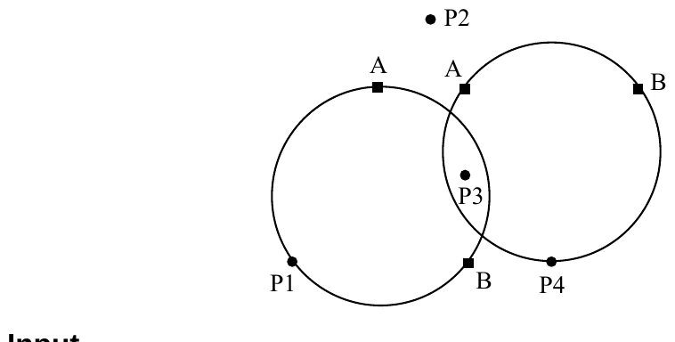

The 2004 28th Annual ICPC World Finals · Problem J
In order to avoid midair collisions, most commercial flights are monitored by ground-based air traffic control centers that track their position using radar. For this problem, you will be given information on a set of airplanes and a set of control centers, and you must compute how monitoring of the airplanes is distributed among the control centers. The position of each airplane is represented by a unique (x, y) coordinate pair. For the purpose of this problem, the height (altitude) of the airplanes can be ignored.
The number of airplanes that can be monitored by a given control center varies from time to time due to changes in staff and equipment. At any given time, each control center monitors as many planes as it can, choosing the airplanes to be monitored according to the following priorities: (1) it will prefer to monitor planes that are closer to the control center rather than ones that are farther away; (2) if two airplanes are equally distant from the center and the center can monitor only one of them, it will choose the one that is farther to the north (positive y-axis); (3) if two airplanes are equally distant and have the same y-coordinate, the center will give preference to the airplane that is farther to the east (positive x-axis).
At any given moment, each control center has a circular “span of control” whose radius is the distance to the farthest airplane being monitored by the control center. All airplanes inside the span of control are monitored by the control center. Airplanes on the boundary of the span of control may or may not be monitored by the control center, depending on its capacity and on the priorities listed above.
You will not be given the positions of the control centers. Instead, for each control center, you will be given the number of airplanes that it is currently monitoring, and two points that are on the boundary of its current span of control. With this information, you can compute the position of the control center and decide which airplanes it is monitoring. If the data is consistent with more than one possible span of control, you should choose the span that includes the airplane that is farthest to the north, breaking ties by choosing the airplane that is farthest to the north then to the east.
The figure below, which shows four airplanes and two control centers, illustrates the problem. Each control center is represented by a circular span of control and by two points on the boundary of this span, labeled A and B. P1, P2, P3, and P4 label the four airplanes. In this example, airplanes P1 and P4 are each being monitored by a single control center, airplane P3 is being monitored by two control centers, and airplane P2 is not being monitored by either control center.

The input consists of several trial data sets. The first line of input in each trial data set contains two integers NP (0 < NP < 100) and NC (0 < NC < 10), which represent the number of airplanes and the number of control centers, respectively. Each of the next NP lines contains two floating-point numbers that represent the (x, y) coordinates of one airplane. Each of the next NC lines describes one control center. Each contains an integer between 0 and NP (inclusive) indicating the number of airplanes monitored by the control center, followed by two pairs of floating point numbers that represent the (x, y) coordinates of two points on the boundary of its span of control (neither of which is the position of an airplane). If two distances differ by less than 0.00001, you should treat them as the same distance.
The last data set is followed by a line containing two zeros.
For each trial, compute the number of airplanes that are monitored by zero control centers, the number of airplanes that are monitored by one control center, and so on up to the number of airplanes that are monitored by NC control centers. Print the trial number followed by a sequence of NC + 1 integers, where the ith integer in the sequence represents the number of airplanes that are monitored by i-1 control centers. If data for one of the control centers is inconsistent, print “Impossible” instead of the sequence of integers for that trial. Use the format shown in the example output, and print a blank line after each trial.
4 2 3.0 0.0 0.0 0.0 1.6 2.8 2.0 1.0 2 1.0 2.0 2.0 0.0 2 2.0 2.0 4.0 2.0 2 1 0.0 0.5 0.0 -0.5 0 -1.0 0.0 1.0 0.0 0 0
Trial 1: 1 2 1 Trial 2: Impossible